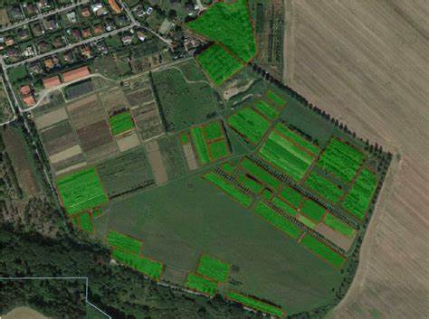

Use of GPS in fields documentation : -
GPS is becoming a common technology in agriculture. For example, modern agriculture involves the use of GPS to document the status of the farmland. Through the GPS, it is easy to determine and document the yields from a given farm, as well as record the application rates. Such technologies are useful in that the farmers can rely on the collected and recorded data for reference when making any decisions. The recommendable documentation technology is the yield map, which can be used to offer a summary of entire year’s activities. Such maps are highly useful as they can give a wide range of information about just anything such as the status of the drainage system in your field.